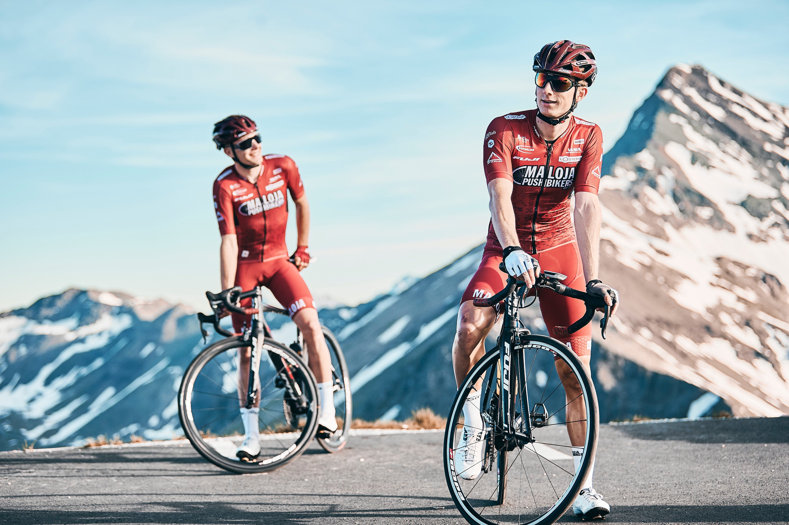

Athletic Tours
We have a team of members who take part in different races around the world including "Tour de France". We facilitate training with a skilled team member specific to your needs. Weather you want to try busy cycling or long race cycling, we got you! We have regular weekly days trips around spontaneous route which you will enjoy. Just bring your gear and if you forgot it in another place we have different models of cycles to suit your needs. Why not join them to motivate yourself around people which the same goals.